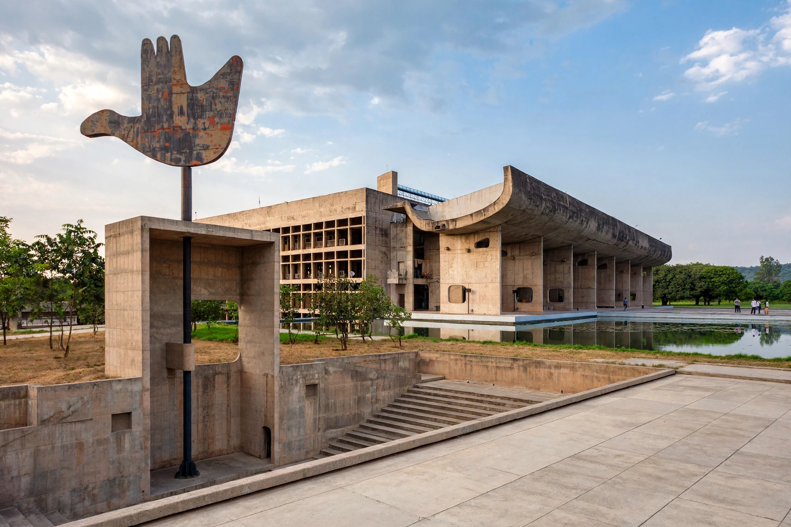

| Country | India |
|---|---|
| Status | Union territory; capital of Punjab and Haryana |
| Area | 114 km2 |
| Population (2011) | 1,055,450 |
| Planned by | Le Corbusier and team |
Chandigarh is a city and union territory in northern India, joint capital of Punjab and Haryana, renowned as one of the earliest planned cities of independent India.
History
After Partition in 1947 Punjab lost Lahore to Pakistan, and Jawaharlal Nehru promoted a new modern capital. Reworked by Le Corbusier from an earlier Mayer-Nowicki plan, the city was inaugurated in 1953 and became a union territory in 1966.
Planning and architecture
Self-contained sectors on a grid, green belts, the Capitol Complex (a UNESCO World Heritage Site), the Open Hand Monument, Sukhna Lake and Nek Chand's Rock Garden are landmarks.
Geography
At the foothills of the Shivaliks, it has a humid subtropical climate with hot summers, monsoon rain and cool winters.
Economy and education
Government, services, IT and education dominate; institutions include Panjab University and PGIMER.